Hướng dẫn cách hạch toán nghiệp vụ mua hàng có phát sinh các chi phí mua hàng hóa như: bảo hiểm hàng hóa, tiền thuê kho, thuê bến bãi, chi phí vận chuyển, bốc xếp, bảo quản... trên phần mềm Misa
Khi mua hàng có phát sinh các chi phí liên quan trực tiếp đến quá trình thu mua hàng hóa như: bảo hiểm hàng hóa, tiền thuê kho, thuê bến bãi, chi phí vận chuyển, bốc xếp, bảo quản đưa hàng hóa từ nơi mua về đến kho đơn vị, các khoản hao hụt tự nhiên trong định mức phát sinh trong quá trình thu mua hàng hóa...
- Căn cứ vào các hóa đơn chi phí mua hàng liên quan, kế toán mua hàng sẽ phân bổ chi phí thu mua vào các mặt hàng đã mua theo tiêu thức số lượng hoặc giá trị của hàng hóa.
1. Cách định khoản hạch toán nghiệp vụ Mua hàng có phát sinh chi phí mua hàng
- Mua vật tư, hàng hóa, dịch vụ
- Nợ TK 152, 156, 641, 642… - Giá mua chưa có thuế GTGT
- Nợ TK 133 - Thuế GTGT được khấu trừ (nếu có)
- Có TK 111, 112, 331… - Tổng giá thanh toán
- Khi phát sinh chi phí mua hàng
- Nợ TK 152, 156, 641, 642… - Chi phí mua hàng
- Nợ TK 133 - Thuế GTGT được khấu trừ (nếu có)
- Có TK 111, 112, 331… - Tổng giá thanh toán
2. Các bước thực hiện hạch toán nghiệp vụ Mua hàng có phát sinh chi phí mua hàng trên phần mềm Misa
Tổng quan, có 3 trường hợp sau:
- Trường hợp 1: Hóa đơn mua hàng và hóa đơn chi phí mua hàng về cùng lúc
- Trường hợp 2: Hóa đơn mua hàng về trước hóa đơn chi phí mua hàng
- Trường hợp 3: Hóa đơn chi phí mua hàng về trước hóa đơn mua hàng
Cách hạch toán ghi sổ trên phần mềm Misa trong từng trường hợp như sau:
* Trường hợp 1: Hóa đơn mua hàng và hóa đơn chi phí mua hàng về cùng lúc
1. Vào phân hệ "Mua hàng" => chọn "Chứng từ mua hàng nhiều hóa đơn" (hoặc vào tab "Mua hàng hóa, dịch vụ" => ấn "Thêm\Chứng từ mua hàng nhiều hóa đơn").
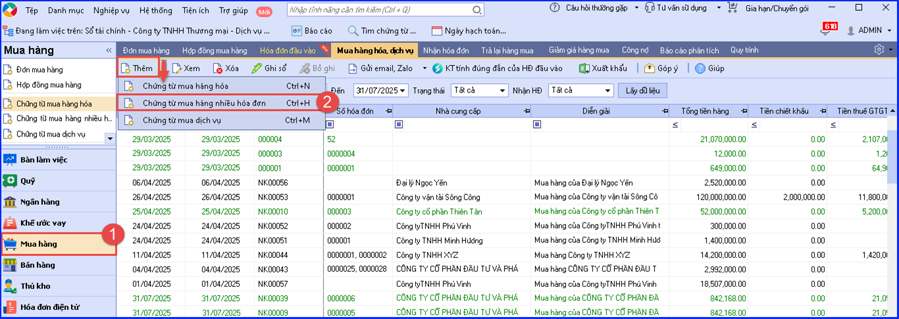
2. Khai báo các thông tin chi tiết của chứng từ mua hàng.
- Tại tab "Hàng tiền": khai báo thông tin hàng hóa được mua về và chi phí mua hàng phát sinh.
+ Tại cột "Đối tượng": Khai báo thông tin nhà cung cấp tương ứng với mỗi mã hàng và chi phí mua hàng.
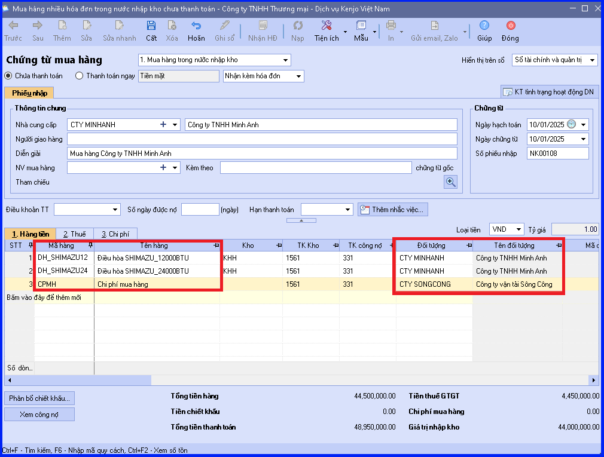
- Tại tab "Thuế": Khai báo thông tin thuế GTGT và thông tin hóa đơn tương ứng với mỗi mã hàng và chi phí mua hàng.
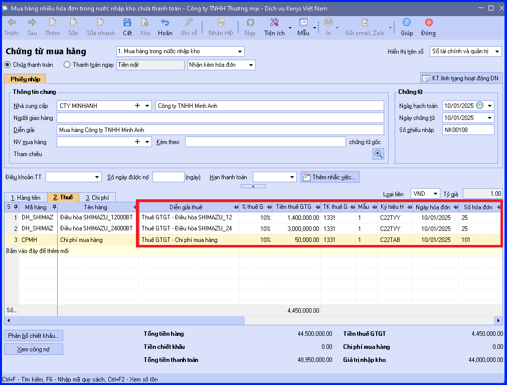
- Tại tab "Chi phí": chương trình sẽ tự động lấy giá trị chi phí mua hàng ở tab "Hàng tiền" sang. => Thực hiện phân bổ chi phí mua hàng cho hàng hóa mua về như sau:
+ Ấn "Phân bổ Chi Phí".
+ Chọn phương thức phân bổ, sau đó ấn "Phân bổ".
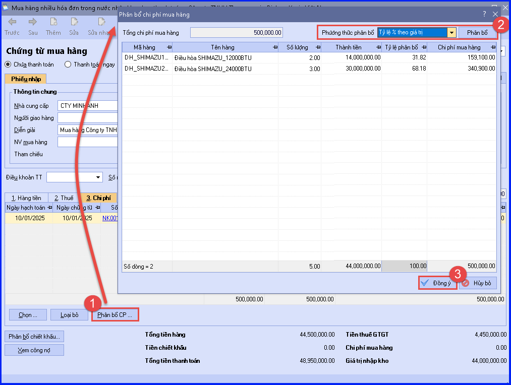
+ Ấn "Đồng ý" => chương trình sẽ tự động phân bổ chi phí mua hàng cho các mặt hàng được mua về trên tab "Hàng tiền".
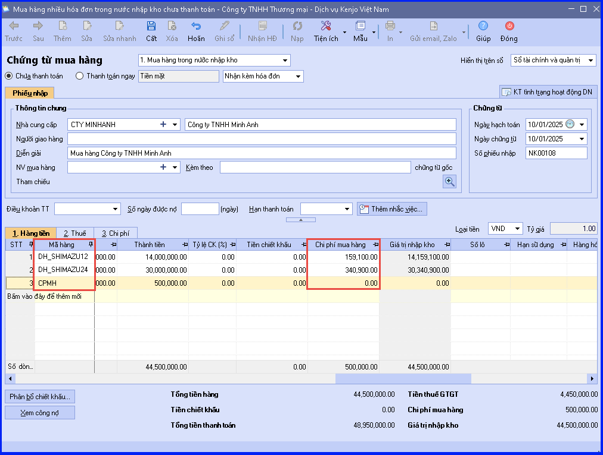
3. Các bạn ấn "Cất".
CHÚ Ý: Trường hợp hóa đơn mua hàng và hóa đơn vận chuyển được xuất từ cùng một nhà cung cấp, Kế toán có thể thực hiện thông qua chức năng lập "Chứng từ mua hàng" (thực hiện khai báo tượng tư như lập "Chứng từ mua hàng nhiều hóa đơn").
* Trường hợp 2: Hóa đơn mua hàng về trước hóa đơn chi phí mua hàng
Ở trường hợp này chúng ta có 2 các thực hiện như sau:
Cách 1: Hạch toán độc lập chứng từ mua hàng và chứng từ mua dịch vụ
Bước 1: Hạch toán hàng hóa mua về
1. Vào phân hệ "Mua hàng" => chọn "Chứng từ mua hàng hóa" (hoặc vào tab "Mua hàng hóa, dịch vụ" => nhấn "Thêm\Chứng từ mua hàng hóa").
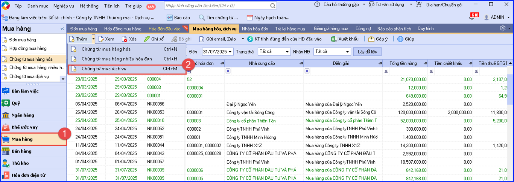
2. Khai báo các thông tin chi tiết của chứng từ mua hàng.
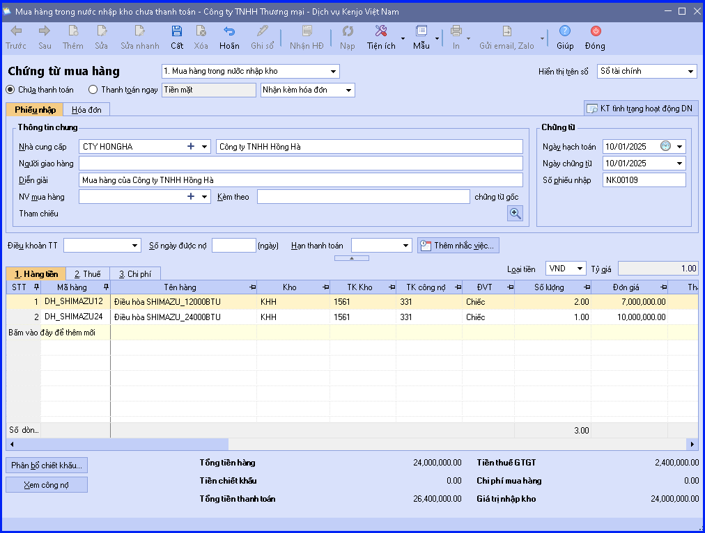
3. Các bạn ấn "Cất".
Bước 2: Hạch toán và phân bổ chi phí mua hàng
1. Vào phân hệ "Mua hàng" => chọn "Chứng từ mua dịch vụ" (hoặc vào tab "Mua hàng hóa, dịch vụ" => nhấn "Thêm\Chứng từ mua dịch vụ").
.png)
2. Tích chọn "Là chi phí mua hàng". Khai báo các thông tin chi tiết của chứng từ mua dịch vụ.
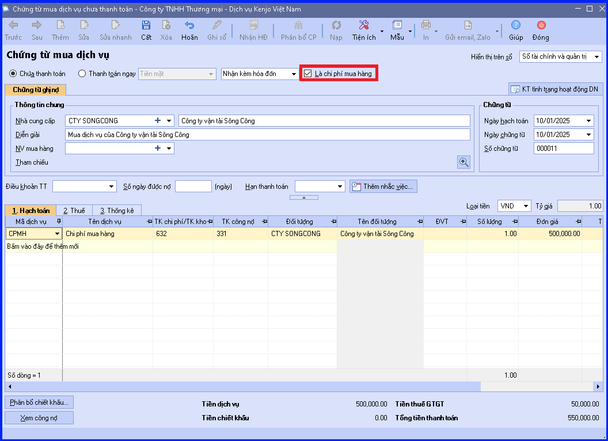
3. Các bạn ấn "Cất".
4. Chọn "Phân bổ Chi Phí" => sau đó ấn "Chọn chứng từ mua hàng".
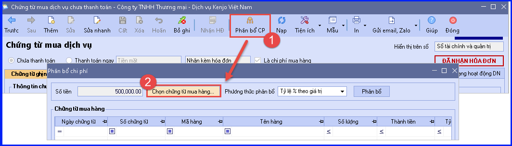
5. Thiết lập điều kiện tìm kiếm chứng từ mua hàng, sau đó ấn "Lấy dữ liệu".
6. Tích chọn các mặt hàng cần cần phân bổ chi phí mua hàng, sau đó ấn "Đồng ý".
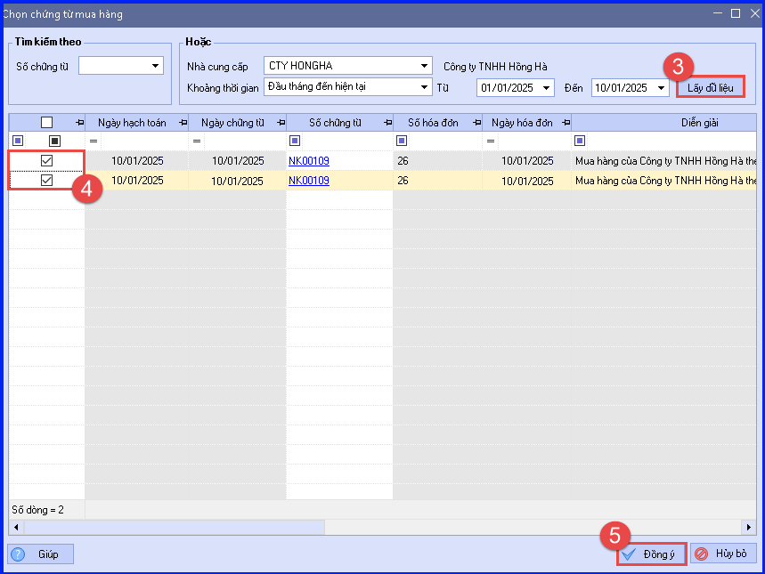
7. Lựa chọn phương thức phân bổ, ấn "Phân bổ" => Các bạn ấn "Đồng ý".
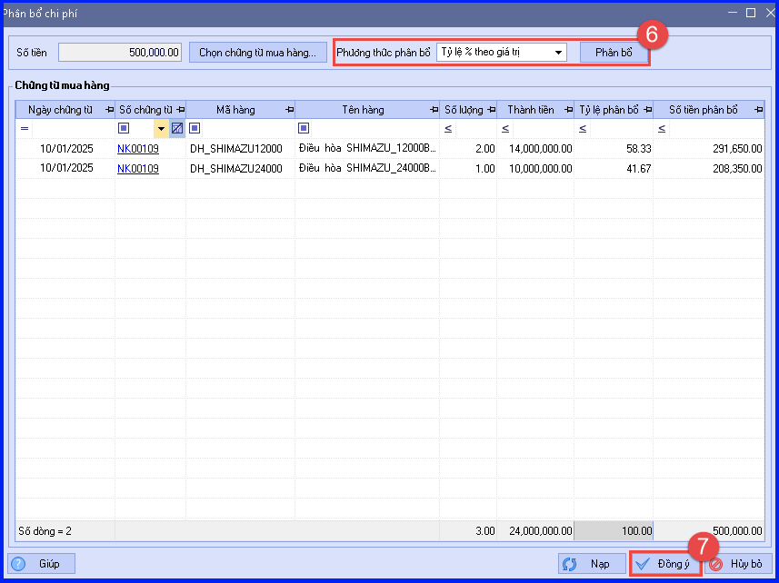
8. Chương trình tự động phân bổ chi phí vận chuyển hàng về kho vào giá trị nhập kho của hàng hóa mua về trên tab "Hàng tiền" của chứng từ mua hàng đã chọn.
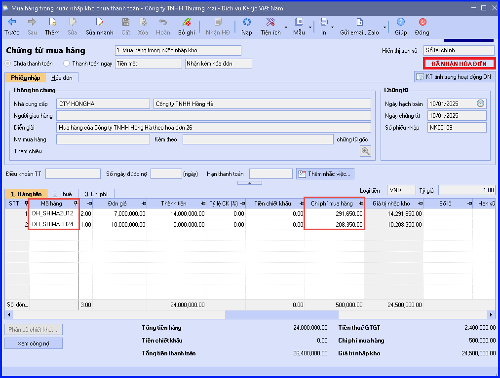
Cách 2: Lập nhanh chứng từ mua dịch vụ từ chứng từ mua hàng
- Khai báo chứng từ mua hàng hóa dịch vụ như bình thường (Thực hiện khai báo như Cách 1).
.png)
- Tiếp đó, tại tab "Chi phí" => chọn chức năng "Phân bổ Chi Phí mua hàng"
- Nhập "Tổng chi phí mua hàng" => Chọn phương thức phân bổ và nhấn "Phân bổ"
- Các bạn ấn "Đồng ý".
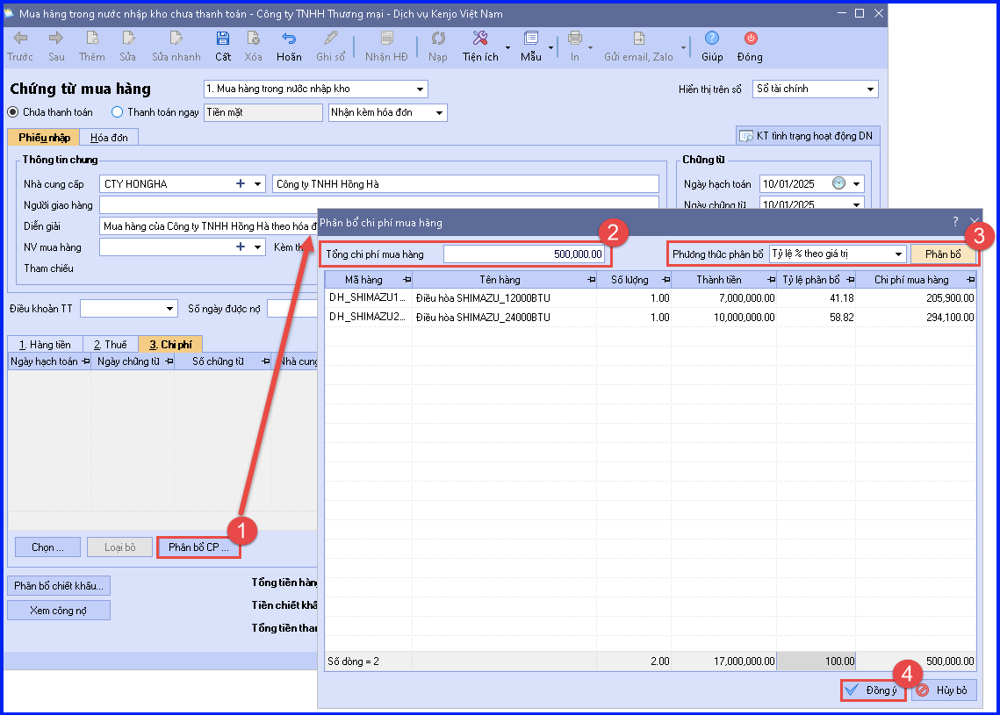
- Chương trình tự động sinh nhanh chứng từ mua dịch vụ tương ứng.
- Kiểm tra và chỉnh sửa lại thông tin trên chứng từ (nếu có). Các bạn ấn "Cất".
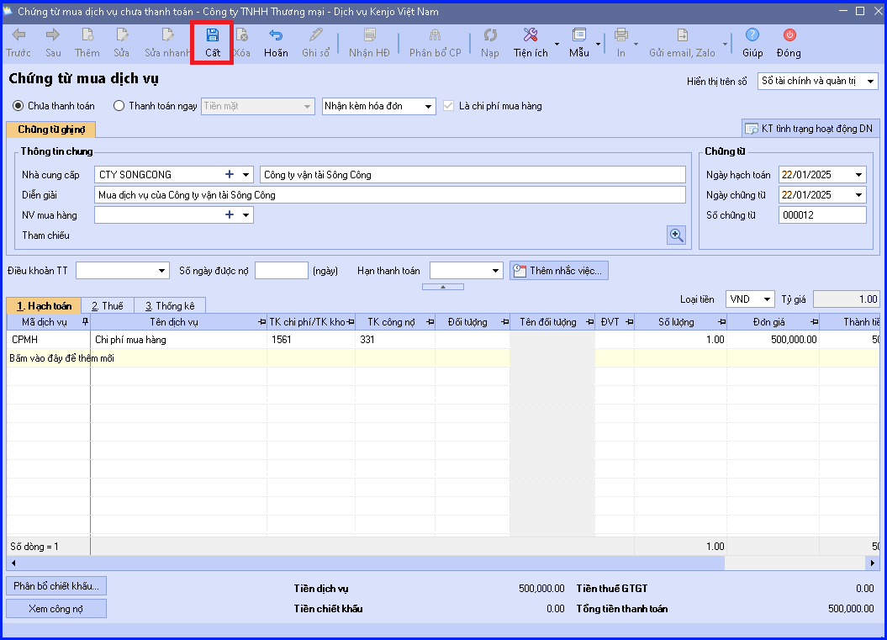
* Trường hợp 3: Hóa đơn chi phí mua hàng về trước hóa đơn mua hàng
Bước 1: Hạch toán chi phí mua hàng
1. Vào phân hệ "Mua hàng" => chọn "Chứng từ mua dịch vụ" (hoặc vào tab "Mua hàng hóa, dịch vụ" => nhấn "Thêm\Chứng từ mua dịch vụ").
.png)
2. Khai báo các thông tin chi tiết của chứng từ mua dịch vụ.
- Tích chọn "Là chi phí mua hàng".

3. Các bạn ấn "Cất".
Bước 2: Hạch toán hàng hóa mua về và phân bổ chi phí mua hàng
1. Vào phân hệ "Mua hàng" => chọn "Chứng từ mua hàng hóa" (hoặc vào tab "Mua hàng hóa, dịch vụ" => ấn "Thêm\Chứng từ mua hàng hóa").
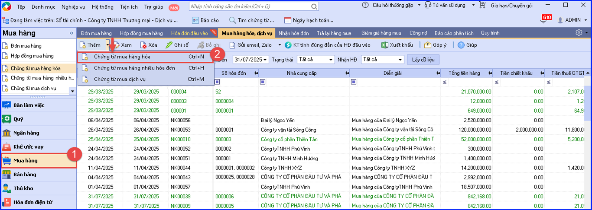
2. Khai báo các thông tin chi tiết của chứng từ mua hàng.
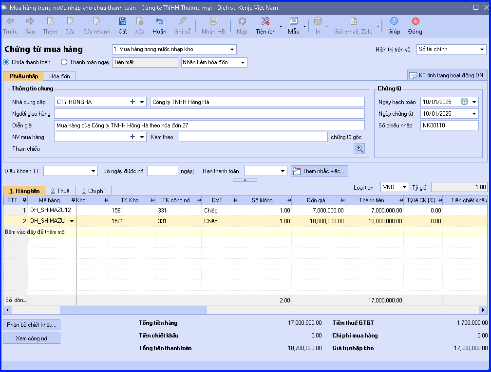
3. Phân bổ chi phí mua hàng cho hàng hóa mua về:
- Các bạn ấn "Chọn" trên tab "Chi phí" (hoặc tab "Phí hàng về kho" nếu chọn loại chứng từ mua hàng là "Mua hàng nhập khẩu nhập kho"; hay tab "Chi phí mua hàng" nếu chọn loại chứng từ mua hàng là "Mua hàng nhập khẩu không qua kho").
- Thiết lập điều kiện tìm kiếm chứng từ chi phí mua hàng, sau đó ấn "Lấy dữ liệu".
- Tích chọn các chứng từ hạch toán chi phí mua hàng cần phân bổ.
- Tại cột "Số phân bổ lần này", có thể nhập lại số tiền được phân bổ.
=> Áp dụng trong trường hợp chi phí mua hàng được sử dụng để phân bổ cho nhiều chứng từ mua hàng khác nhau.
- Các bạn ấn "Đồng ý".
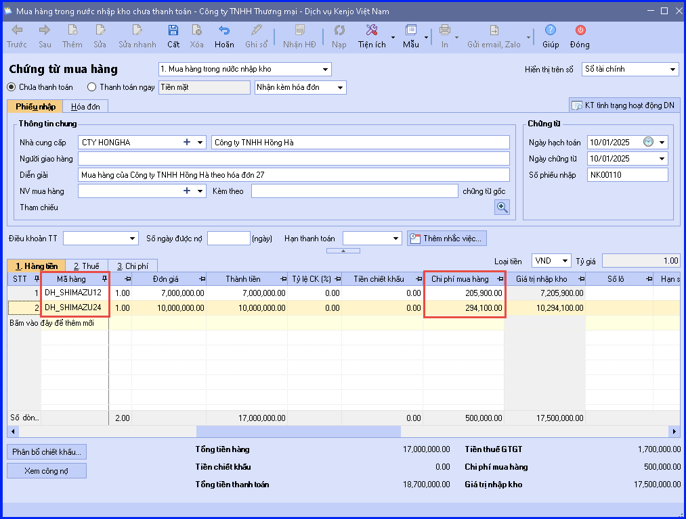
- Các bạn ấn "Phân bổ Chi Phí".
- Chọn phương thức phân bổ, ấn "Phân bổ".
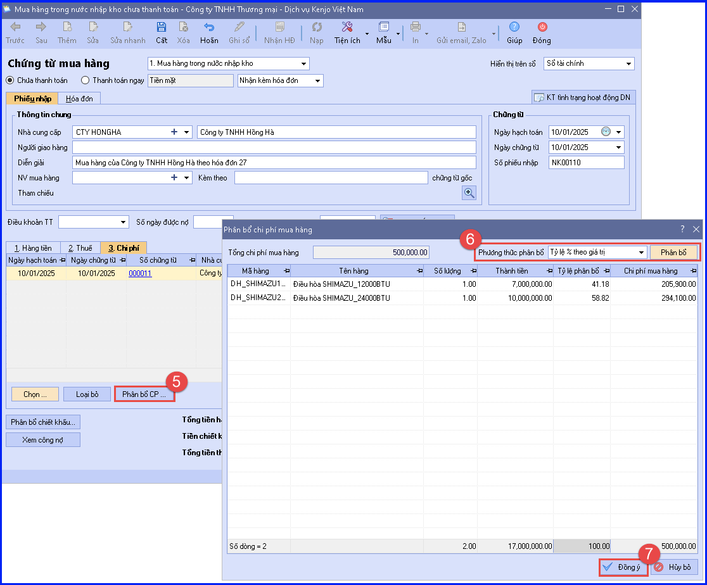
- Các bạn ấn "Đồng ý" => chương trình sẽ tự động phân bổ chi phí vận chuyển hàng về kho vào giá trị nhập kho của hàng hóa mua về trên tab "Hàng tiền".
.png)
4. Các bạn ấn "Cất".
CHÚ Ý: Nếu muốn theo dõi chi phí mua hàng trên tài khoản 1562 theo đúng chế độ kế toán thì sau khi thực hiện phân bổ chi phí mua hàng cho các mặt hàng mua về, cần vào phân hệ "Tổng hợp" => chọn "Chứng từ nghiệp vụ khác" để hạch toán bút toán kết chuyển tài khoản 1562 sang tài khoản 1561 (Nợ TK 1561/Có TK 1562).
KẾ TOÁN DIỆU TÂM chúc các bạn làm tốt!
=============================
Nếu bạn muốn thành thạo các kỹ năng làm kế toán trên phần mềm Misa
Thì bạn có thể tham khảo "Khóa Học Thực Hành Kế Toán Trên Phần Mềm Misa" tại Công ty đào tạo Kế Toán Diệu Tâm
Trong khóa học này, bạn sẽ được dạy cách lên sổ sách, lập báo cáo tài chính trên phần mềm Misa
Chi tiết về chương trình đào tạo bạn xem tại đây nhé: Khóa học thực hành kế toán trên Misa
=============================
=============================
Nếu bạn muốn thành thạo các kỹ năng làm kế toán trên phần mềm Misa
Thì bạn có thể tham khảo "Khóa Học Thực Hành Kế Toán Trên Phần Mềm Misa" tại Công ty đào tạo Kế Toán Diệu Tâm
Trong khóa học này, bạn sẽ được dạy cách lên sổ sách, lập báo cáo tài chính trên phần mềm Misa
Chi tiết về chương trình đào tạo bạn xem tại đây nhé: Khóa học thực hành kế toán trên Misa
=============================